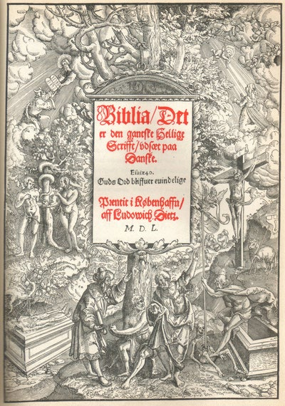
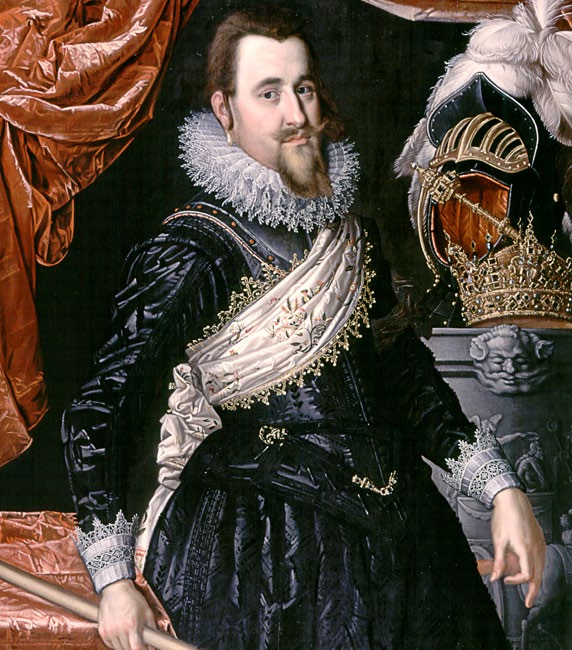
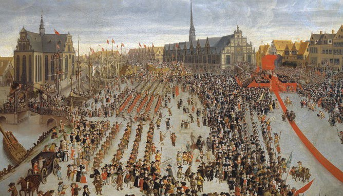

1.4 – REFORMATION, SVENSKEKRIGE OG ENEVÆLDENS INDFØRELSE (ca. 1500-1700)
sidde 13
SVENSKEKRIGE OG ENEVÆLDENS INDFØRELSE (ca. 1500-1700)
Med reformationen i 1536 blev protestantismen indført i Danmark. Det betød samtidig, at kongens magt blev meget større. Kirken, det vil sige det kristne trossamfund, blev lagt ind under kongen i stedet for at være under paven, og kongen overtog kirkens ejendom.
REFORMATIONEN
I middelalderen var den danske kirke en del af den katolske kirke, som hørte direkte under paven i Rom. Kirken i Danmark var derfor relativt uafhængig af kongen.
Kirken var en rig og magtfuld institu tion, men omkring år 1500 blev dens magt truet af flere bevægelser, der ønskede at reformere kirken. Disse bevægelser blev kaldt protestantiske.
En af disse bevægelser blev ledet af den tyske munk Martin Luther. Oprøret førte til, at store dele af Nord europa brød med paven. I stedet blev der grundlagt uafhængige protestan tiske kirker i nært samarbejde med de lokale konger og fyrster.
Martin Luthers ideer kom til Danmark i 1520’erne. Det var især præsten Hans Tausen (1494-1561), der udbredte dem. De gik først og fremmest ud på, at man kun kunne opnå frelse ved at tro og ikke ved at gøre gode gerninger eller ved at købe aflad. Diskussionerne om kristendommen udviklede sig i flere danske byer til en folkelig modstand, der var rettet mod den rige og magtfulde katolske kirke. ”Christian 3.’s Bibel” er den første oversæ
”Christian 3.’s Bibel” er den første over sættelse af Biblen til dansk og udkom i 1550. Foto: Nationalmuseet.
Læremateriale Til Indfødsretsprøven

sidde 14
I 1534 udbrød der borgerkrig i Danmark mellem kirkens katolske magthavere og tilhængerne af protestantismen. Under Christian 3.s (1536-59) ledelse vandt protestanterne i 1536 borgerkrigen. Samme år blev reformationen, det vil sige den religiøse forandring af kirken med udgangspunkt i Martin Luthers prote stantiske lære, formelt gennemført. Danmark blev et protestantisk land, og kongen afsatte de katolske biskopper. Den danske kirke hørte nu under kongen i stedet for under paven. Reformationen medførte, at kirkens politiske magt blev meget mindre.
Den katolske kirke havde ejet meget store værdier og haft meget jord, og alt dette overtog kongen nu. Samtidig lukkede han klostrene. Hidtil havde kirkens sprog været latin, som kun få forstod. Martin Luther mente, at alle skulle have adgang til kristendommen på deres eget sprog. Reformationen indebar derfor, at Biblen nu blev oversat til dansk, og gudstjenester og salmesangen foregik fra nu også kun på dansk.
Reformationen betød også, at det kun var kongen, der kunne udnævne præster og biskopper. På den måde kunne kirken nu bruges til at styrke kongemagten og med den oversatte Bibel også et fælles dansk skriftsprog ud i alle hjørner af det danske rige. På længere sigt fik reformationen afgørende betydning for Danmarks historie, fordi den knyttede stat, kirke, sprog og befolkning tæt sammen. I første omgang blev det begyndelsen til en stærk statsmagt, der i 1660-61 udviklede sig til kongelig enevælde.
CHRISTIAN 4. OG SVENSKEKRIGENE
Christian 4. (1588-1648) var konge i næsten 60 år, og har dermed været konge længere end nogen anden i Danmarkshistorien. Han er også en af de mest betydningsfulde konger. Han havde som andre konger i sin samtid stor interesse for kunst og arkitektur og stod bag en lang række byggerier. I første halvdel af 1600-tallet fik han opført mange bygninger – især i og omkring hovedstaden København. Han fik blandt andet opført kendte bygningsværker som Frederiksborg Slot ved Hillerød, Københavns Børs samt Rosenborg Slot og Rundetårn i København. Han grundlagde også adskillige nye byer – mest uden for det nuværende Danmark som for eksempel Kristianstad i Skåne, Kristiansand i Norge og Kristiania, som nu hedder Oslo og er Norges hovedstad. Christian 4.
Christian 4.
Læremateriale Til Indfødsretsprøven

sidde 15
Men Christian 4.s regeringstid var også præget af tabte krige og landområder. Da han overtog regeringsmagten, var Danmark dominerende i området omkring Østersøen; men også Sverige havde store ambitioner for området. Magtba lancen mellem Danmark og Sverige ændrede sig markant, da Christian 4. i årene 1625-29 trak Danmark ind i Trediveårskrigen – en europæisk storkrig, som især foregik i Tyskland (1618-48). Kongen led et stort militært nederlag i 1626, og da Danmark trak sig ud af krigen i 1629, var Sverige blevet den førende magt i østersøområdet.
Det dårlige forhold til Sverige fortsatte i resten af Christian 4.s regeringstid. I 1643 blev Danmark angrebet af Sverige, og i 1645 måtte Danmark blandt andet afstå provinsen Halland i 30 år, øen Gotland i Østersøen og dele af Norge til Sverige. Ved Christian 4.s død i 1648 var Danmark et land i dyb krise, og Sveriges overmagt i forhold til Danmark skulle vare resten af 1600-tallet.
I årene 1657-60 var Danmark i to omgange igen i krig med Sverige. Under den første af disse krige var svenske tropper marcheret op fra en krig i Polen og havde besat Jylland. I den ekstremt kolde vinter 1657-58 lagde der sig et tykt lag is i havet omkring Danmark. Derfor var den danske flåde afskåret fra at forsvare de danske øer. Omvendt kunne svenskerne gå over isen til Fyn og siden til Langeland, Lolland og Sjælland og erobrede store dele af Danmark, som ved en fredsslutning i Roskilde (Roskilde-freden) i 1658 for altid måtte afstå Skåne, Halland og Blekinge samt flere norske områder til Sverige. Bornholm blev også afstået til Sverige ved samme fredsslutning – men øens befolkning iværksatte hurtigt et oprør og fik styrtet det svenske styre på øen, således at Bornholm igen blev dansk.
Senere samme år fortrød den svenske konge, at han ikke havde erobret hele Danmark. Igen blev der krig, og svenskerne belejrede København, det vil sige, at de omringede byen for at få den til at overgive sig. Men med hjælp fra Nederlan dene lykkedes det den danske hovedstad at modstå belejringen, og svenskerne fik ikke erobret flere danske områder. Ligeledes måtte svenskerne acceptere, at Bornholm skulle forblive dansk.
Men tabet af de mange landområder fik store konsekvenser for Danmark. Således et stort tab af befolkning, frugtbar landbrugsjord, værdifuld handel og af en lang kystlinje til Østersøen. Og Danmark kontrollerede nu ikke længere begge sider af Øresund, som er ind- og udsejlingen til Østersøen. Danmark var herefter ikke længere en magtfaktor i Nordeuropa.
ENEVÆLDEN INDFØRES
Oven på de tabte krige til Sverige og landets dårlige økonomi voksede kravet i befolkningen om at afskaffe adelens særlige fordele. Adelen, som udgjorde under én procent af Danmarks befolkning, var stormænd, som typisk var gods ejere, og de havde en række privilegier. De skulle for eksempel ikke betale skat,
Læremateriale Til Indfødsretsprøven
sidde 16
de kunne vælge, hvem der skulle være ny konge, når en konge døde. De kunne også med en håndfæstning tvinge den nye konge til at dele magten med dem. Til gengæld for deres privilegier skulle de yde militær støtte til kongen, når der blev krig.
I oktober 1660 fik kong Frederik 3. (1648-70) indført, at adelen fremover skulle betale skat blandt andet til at genopbygge landet efter krigene mod Sverige.
Adelen, som ikke havde været til meget hjælp under krigen, måtte også accep tere, at kongemagten fremover automatisk skulle gå i arv fra den regerende konge til hans nærmeste arving.
Kongen brugte sin nye magt til i 1660-61 at indføre en ny styreform i Danmark, som kaldtes enevælde. Kongen regerede nu landet helt alene. Han kunne nu selv ansætte embedsmænd, indføre love og opkræve skatter uden først at spørge andre om lov. Der opstod en egentlig central statsadministration samt en permanent hær, som kongen kontrollerede.Hyldningen på Københavns slotsplads af Frederik 3. som arvekonge, efter hånd
Hyldningen på Københavns slotsplads af Frederik 3. som arvekonge, efter håndfæstningen var blevet annulleret i 1660.
Som det eneste enevældige monarki i Europa fik Danmark i 1665 en grundlov, der var formuleret og skrevet ned. Denne lov kaldtes Kongeloven og fastslog først og fremmest, at kongen havde næsten ubegrænset magt. Kongeloven satte kun meget få grænser for, hvad kongen måtte. Han måtte ikke afgive sin enevældige magt hverken helt eller delvist. Han måtte heller ikke dele konge riget mellem sine børn, men skulle lade det hele gå i arv til tronfølgeren. Endelig skulle han tilhøre den protestantiske kirke, som var blevet skabt med reforma tionen i 1500-tallet med udgangspunkt i Martin Luthers lære.
Kongeloven var grundlaget for kongens enevældige magt helt frem til den første demokratiske grundlov i 1849.
Læremateriale Til Indfødsretsprøven

Fonte: Læremateriale til Indfødsretsprøven, SIRI.